45deg
About
Not a portfolio, just a place to put my hobbies. X
Works
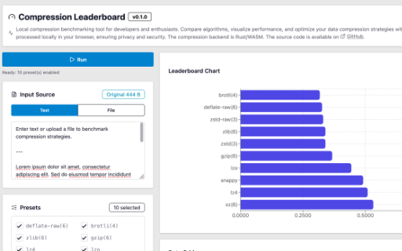
Compression Leaderboard (2026)
各種可逆圧縮アルゴリズムのパフォーマンスを比較するためのツール (WASMで動作)
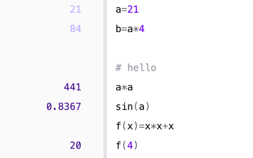
QuickCalc (2026)
Swift PlaygroundやAppleのメモにインスパイアされたリアクティブな計算機
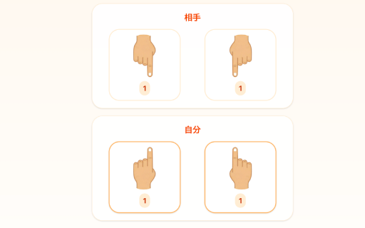
STICK GAME (2026)
指を用いた遊びでCPUと対戦
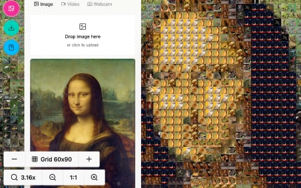
mozaic-app (2026)
ブラウザベースのモザイクアート生成ツール。画像/動画/カメラ入力に対応。タイルの定義も可能
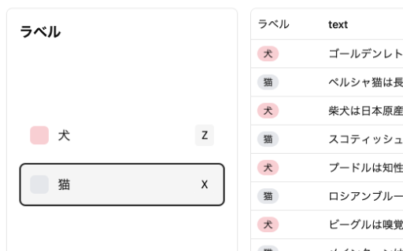
nanotation (2026)
ブラウザベースのアノテーションツール
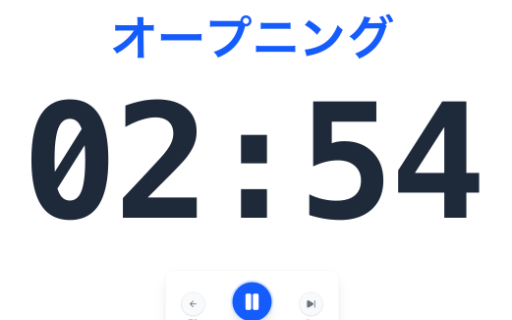
FlowTimer (2025)
シンプルなプレゼンテーションタイムキーパー
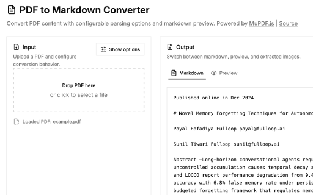
pdf2md (2026)
PDFをMarkdownに変換するツール。画像の抽出も可能。ローカル動作
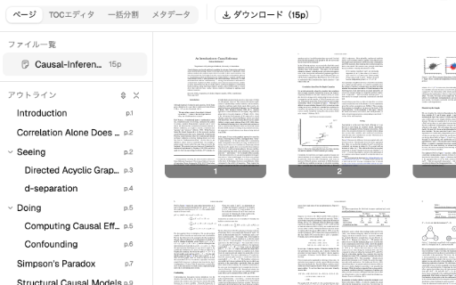
pdf-toc-tool (2026)
PDFのTOCごとの表示・分割・結合等をまとめたツールキット PDF Unbinderの後継。ローカル動作
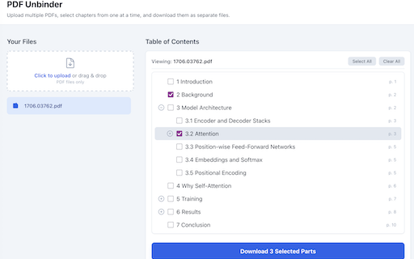
PDFUnbinder in Browser (2025)
PDFの目次を元にファイル分割 [Web版] Made by Vibe Coding
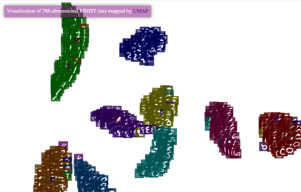
MNIST UMAP Visualization (2024)
手書き文字をUMAPを使って2次元にマッピングしたものの可視化
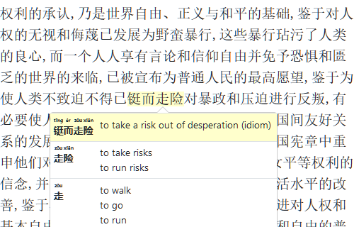
HoverDictCN (2019)
中国語の漢字をマウスオーバー/タップすると単語/漢字の意味(英語)が出てくるツール
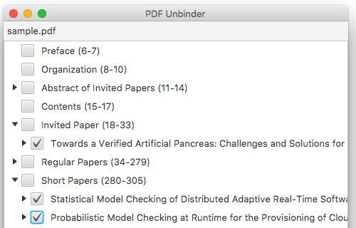
PDFUnbinder (2018)
PDFの目次を元にファイル分割 [JavaFX]
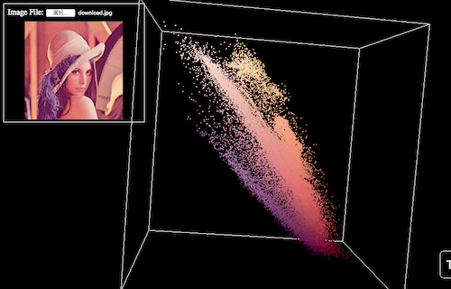
RGBCloud (2017)
画像に含まれる色の分布を3Dで表示する。RGBとHSL色空間で表示切り替えが可能。スマホでも動くはず。
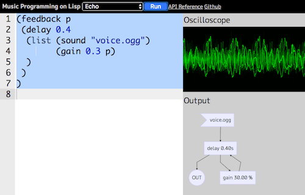
Kantele (2016)
スライド 研究室所属時の課題で作ったものです。サウンドプログラミングが出来るScheme風の言語です。音が出ます。
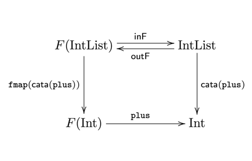
dynamorphism の紹介 (2015)
rogy Advent Calendar のために書いたものです。関数型プログラミングで動的計画法を行う手法について説明しています。
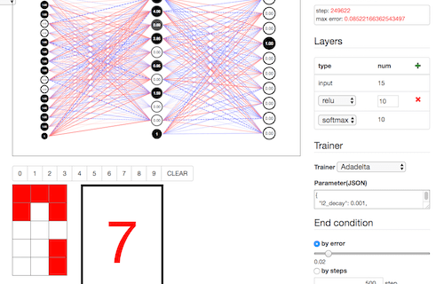
ニューラルネットワークの可視化 (ConvnetJS版) (2016)
ConvnetJSで書きなおしたものです。素子の種類や学習器などが調整できるようになりました。
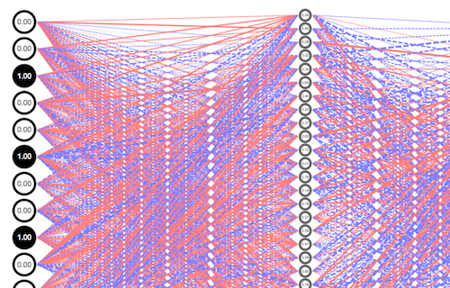
ニューラルネットワークの可視化 (2014)
BPNNの可視化です。Slide: HTML5によるニューラルネットワークの可視化
Miscellaneous
- AsciiArt Table Parser (2026) - アスキーアート等のテーブルを解析してプレーンにするツール
- ブラウン管テレビ風 画像エフェクター (2025) - 画像をブラウン管テレビ風（CRT）に加工する WebGL エフェクト
- JPEGガビガビ化ツール (2025) - JPEG圧縮を繰り返してガビガビ質感を作るツール
- Images to PDF (2025) - 画像をドラッグ&ドロップで並べ替えて PDF 化するツール
- ナワトルテキスト補助 (2024) - ナワトル語の長音記号入力を補助するテキストエディタ
- Safetensors metadata viewer (2023) - safetensors ファイルのメタデータを表示するビューア
- Jinja2 Template Renderer (2022) - Pyodide 上で Jinja2 テンプレートをブラウザ実行するレンダラー